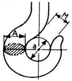
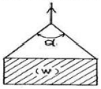
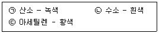

천장크레인운전기능사 (2008-10-05 기출문제)
1과목: 임의 구분
1. 천장크레인의 작업능력은 무엇으로 나타내는가?
- 작업속도
- 권상체적
- 작업시간
- 권상톤수
(정답률: 66%)

2. 훅의 상태가 불량하면 위험한 사고의 원인이 된다. 다음 중 훅을 교환해야 할 상태를 육안으로 가장 간단하고 쉽게 확인할 수 있는 것은?

- 그림에서 M의 치수가 a의 치수가 같아진 것
- A부분의 균열을 확인하기 위하여 비파괴 검사한 것
- 그림에서 M의 치수가 A의 치수보다 커진 것
- 훅의 A의 치수가 마모가 원 치수의 20%인 것
(정답률: 53%)
3. 전자 브레이크에서 전자석 부분의 과열 원인이 아닌 것은?
- 가동 철심이 완전히 부착되지 않을 때
- 전원이 전압 강하 시
- 전선의 부분 단락 시
- 드럼(풀리)과 브레이크슈의 틈새 과다
(정답률: 55%)
4. 주행차륜의 직경이 400㎜이고, 주행모터의 회전수가 3000rpm이며 감속비가 1/100일 때 이 천장크레인의 주행속도는? (단, 마찰저항은 무시)
- 약 12m/min
- 약 30m/min
- 약 38m/min
- 약 120m/min
(정답률: 73%)
5. 천장크레인의 레일(rail)은 무엇을 기준으로 하여 선정되는가?
- 최대 차륜압
- 바퀴의 크기와 중량
- 크레인 정격하중
- 크레인 스팬(span)
(정답률: 15%)
6. 크레인에서 사용하는 각종 시브의 주요 점검사항이 아닌 것은?
- 시브 홈의 이상마모는 없는가
- 시브 홈과 와이어로프 지름이 적정한가
- 시브 홈의 윤활 상태는 적정한가
- 원활히 회전하고 암이나 보스 등에 균열은 없는가
(정답률: 45%)
7. 전자 브레이크의 전자석이 소리를 내며 과열, 소손되는 경우 점검 사항과 관계가 가장 적은 것은?
- 브레이크 라이닝이 발열하지 않았는가
- 풀리와 라이닝의 틈새가 너무 적지 않은가
- 스트로크가 너무 크지 않은가
- 각 링크의 핀 류가 부식 또는 도장으로 굳어 있지 않는가
(정답률: 22%)
8. 주행차륜의 마모 한도로 틀린 것은?
- 좌우 구동 차륜의 직경차(주행) : 원 치수의 0.2%
- 차륜 직경의 마모 : 원 치수의 5%
- 차륜 플랜지의 두께 : 원 치수의 50%
- 차륜 플랜지의 변형 : 수직에서 20도
(정답률: 14%)
9. 훅에 관한 설명으로 가장 올바른 것은?
- 매다는 하중이 50톤 이하는 한쪽 현수 훅을 사용하고 50톤 이상인 것은 양쪽 현수 훅을 사용한다.
- 훅은 하중을 걸었을 때 임의의 방향으로 회전할 수 없게 고정되어 있어야 한다.
- 훅의 재료는 직접 중량물을 매달기 때문에 연성은 작고 강도는 커야 한다.
- 훅의 안전계수는 5 이하 이어야 한다.
(정답률: 34%)
10. 정격하중을 설명한 것으로 맞는 것은?
- 훅, 와이어로프, 버킷, 달아올림기구 등의 무게를 제외한 순수 최급하중을 말한다.
- 훅, 와이어로프, 버킷, 달아올림기구 등의 무게를 포함한 순수 최급하중을 말한다.
- 훅, 와이어로프, 프레임, 리미트 스위치 등의 무게를 제외한 순수 취급하중을 말한다.
- 훅, 와이어로프, 프레임, 리미트 스위치 등의 무게를 포함한 순수 취급하중을 말한다.
(정답률: 70%)
11. 천장크레인에 오일디스크브레이크(oil disk brake)가 설치되어 있을 때 운전실에 설치되는 것은?
- 오일탱크
- 디스크 판
- 브레이크 실린더
- 브레이크 페달
(정답률: 56%)
12. 크레인 거더(girder)의 캠버에 관한 설명 중 틀린 것은?
- 거더는 동, 정, 상, 하 수평의 각 하중에 견디도록 리머 볼트로 견고하게 체결되어있다.
- 크레인의 박스 거더는 캠버를 고려하여야 한다.
- 캠버는 거더의 중앙에서 최대치가 된다.
- 캠버는 하중을 안전하게 들기 위함이며 크레인 수명에는 관계없다.
(정답률: 69%)
13. 차륜과 관련된 설명으로 틀린 것은?
- 각 차륜은 기계가공하여 모두 직경이 균일하게 되어 있으며 답면 및 플랜지는 열처리가 되어 있다.
- 차륜은 차륜 베어링의 급유와 마모에 항상 주의해야 한다.
- 차륜은 주행레일과 기체가 직각이 아니면 양각의 주행저항이 달라져 큰 축압이 가해져서 플랜지가 내측으로 열리게 된다.
- 차륜 중 구동륜은 주행 중 브레이크를 작동시키면 슬립하여 미끄러져서 차륜 일부에 평면으로 부분 마모가 생길 수 있다.
(정답률: 66%)
14. 천장크레인에서 크래브(crab)는?
- 횡행장치이다.
- 각종 전원 판넬이다.
- 주행장치 및 저항기, 판넬을 장치하는 부분이다.
- 권상 및 횡행장치를 설치하여 레일 위를 왕복 운동하는 대차이다.
(정답률: 70%)
15. 도유기와 리미트 스위치에 대한 설명 중 틀린 것은?
- 차륜 도유기는 차륜 플랜지 또는 레일 측면에 소량의 오일을 계속 자동으로 도유하는 기기이다.
- 차륜 도유기의 오일탱크는 도유기 몸체보다 상부에 위치한다.
- 상용 리미트 스위치가 하한선에서 작동했을 때 권상훅의 위치는 보통 크래브 하단 0.5m 정도이다.
- 중추식 리미트 스위치는 비상용으로 사용한다.
(정답률: 28%)
16. 천장크레인에 해당하는 것은?
- 지브 크레인
- 케이블 크레인
- 제철소용 원료 장입 크레인
- 언로더
(정답률: 43%)
17. 천장크레인의 와이어로프는 훅이 최하단(바닥)에 도달되었을 때 와이어 드럼에 얼마의 여유 감김이 있어야 하는가?
- 2회전 이상
- 4회전 이상
- 6회전 이상
- 7회전 이상
(정답률: 54%)
18. 천장크레인의 주행, 횡행, 권상 등에서 과행을 방지할고 연동장치 및 안전장치로 사용되는 것은?
- 타임 릴레이
- 컨트롤러
- 리미트 스위치
- 브레이크
(정답률: 84%)
19. 천장크레인의 속도제어용 브레이크 중 구조가 간단하고 마모부분이 없으며 저속도를 쉽게 얻을 수 있는 것은?
- 유압 디스크 브레이크
- EC(eddy current) 브레이크
- AC 브레이크
- DC 마그넷트 브레이크
(정답률: 54%)
20. 천장크레인의 크리 표시 "40/20 ton, Span 28 M"에서 Span 28M의 뜻은?
- 주행 차륜 사용 허용 평균속도이다.
- 주행 차륜 중심 간 거리가 28m 이다.
- 주행 레일의 길이가 28m 이다.
- 횡행 차륜 간의 거리가 28m 이다.
(정답률: 50%)
2과목: 임의 구분
21. 선로 및 전기 기기를 보호해주는 계전기에서 과전류가 흐를 때 자동적으로 선로를 차단시키는 계전기는?
- 과전압 계전기
- 과전류 계전기
- 부족전압 계전기
- 부족전류 계전기
(정답률: 74%)
22. 크레인 운전 전의 주의사항으로서 틀린 것은?
- 운전실의 각 레버, 컨트롤러 핸들, 스위치 등이 정상인가를 확인한다.
- 무부하로 운전을 행하여 각 안전장치, 브레이크 기능을 알아본다.
- 운전개시 시에는 앵커 또는 레일 클램프를 확실히 작동시켜 둔다.
- 전임 사용자로부터 전달받은 사항을 확인하고 그 내용을 파악하여 둔다.
(정답률: 74%)
23. 잇수가 20인 작은 기어가 500rpm으로 회전할 때 이와 맞물린 큰 기어의 회전수를 100rpm으로 하려면 큰 기어의 잇수는?
- 120
- 100
- 800
- 60
(정답률: 55%)
24. 크레인의 안전운전을 위한 운전 중 점검사항이 아닌 것은?
- 중량물을 인양하면서 자주 권상브레이크 및 주행, 횡행, 브레이크의 동작상태를 점검해 본다.
- 주행, 횡행 리미트 스위치를 작동하기 전에 장애물에 주의한다.
- 운전 중 기계 각부의 이상 음, 이상진동, 발열 등을 수시로 확인한다.
- 정격하중 이상의 중량물을 절대 인양하지 않는다.
(정답률: 54%)
25. 축과 보스에 작은 삼각형의 돌기 홈을 이용하여 고정하는 것은?
- 스플라인
- 세레이션
- 유니버셜 커블링
- 블렌지 커플링
(정답률: 48%)
26. 천장크레인 작업의 안전수칙을 열거한 것 중 적합하지 않은 것은?
- 달아 올린 짐 밑에 사람의 통행을 막는다.
- 운반물을 작업자 상부로 운반한다.
- 지정된 신호수 외에는 신호를 하지 않는다.
- 임의로 스위치 박스에 손대지 않도록 한다.
(정답률: 64%)
27. 시퀀스 제어란 정해진 순서에 따라 무엇을 진행하는 제어인가?
- 전원
- 단계
- 상황
- 실태
(정답률: 59%)
28. 권선형 3상 유도전동기의 회전방향을 변화시키는 방법으로 적합한 것은?
- 전압을 낮춘다.
- 1차 측 공급전원의 3선 중 2선을 바꾼다.
- 1차 측 공급전원의 3선을 모두 바꾼다.
- 저항기의 저항 값을 변화시킨다.
(정답률: 66%)
29. 장비의 급유에 대한 설명으로 틀린 것은?
- 지시된 오일을 주입하되 동절기에는 점도가 높은 것을 사용할 것
- 지시된 주입량을 기준으로 하며 사용빈도에 따라 증감할 것
- 규정된 시간 간격에 맞추어 주입할 것
- 그리스컵 급유인 것은 사용빈도에 따라 수시로 확인하며 급유할 것
(정답률: 58%)
30. 성크 키에 대한 설명 중 틀린 것은?
- 주로 전단력을 받는다.
- 축보다 약간 강한 재질을 사용한다.
- 일반적으로 1/100의 구배를 가지고 있는 경우가 많다.
- 축에는 키 홈을 파지 않는다.
(정답률: 63%)
31. 동력전달용 나사에서 사다리꼴나사의 특징이 아닌 것은?
- 사각나사보다 제작이 어렵고 정밀도가 낮다.
- 마모에 대한 조정이 쉽다.
- 동력전달이 정확하다.
- 강도가 크다.
(정답률: 56%)
32. 천장크레인을 급출발, 급정지하면 안 되는 사유와 가장 거리가 먼 것은?
- 크레인에 기계적 무리를 가하지 않도록 하기 위하여
- 갑자기 출발하면 밑에 있는 운전자가 피할 틈이 없어 위험하므로
- 취급 물건이 관성에 의하여 심하게 흔들리면 매우 위험하므로
- 갑자기 과전류가 흘러 전기장치에 무리가 갈 수 있으므로
(정답률: 41%)
33. 천장크레인의 패널(panel) 중에서 가장 사용율이 높은 것은?
- 권상패널
- 횡행패널
- 주행패널
- 보호패널
(정답률: 20%)
34. 제어기 설명 중 잘못된 것은?
- 회로의 단속에는 접촉편 및 접촉자를 사용한다.
- 교류전동기 40kW 이상은 직접제어기를 사용해야 한다.
- 1차 측의 전원회로를 변환한다.
- 2차 측의 저항은 차례로 단속하여 속도제어 한다.
(정답률: 40%)
35. 다음 설명 중에서 틀린 것은?
- 시브 플랜지의 마모 한도는 시브홈 바닥에서 플랜지의 30%이다.
- 와이어로프를 드럼에 장치하는 방법은 와이어가 벗겨지지 않게 고정구를 사용하여 볼트로 조인다.
- 드럼 직경(D)과 와이어로프(d)와의 양호한 비율(D/d)은 20 이상이다.
- 드럼에 와이어로프가 감길 때 와이어로프 방향과 드럼 홈 방향과의 각도는 2˚ 이내이다.
(정답률: 23%)
36. 구름 베어링의 단점이 아닌 것은?
- 값이 비싸다.
- 충격하중에 약하다.
- 하우징이 크게 되고 설치와 조립이 어렵다.
- 축심을 정확하게 유지할 수 없다.
(정답률: 22%)
37. 권상하중 40톤, 권상속도 1.5m/min인 천장크레인의 전동기의 출력(kW)은?
- 58.8kW
- 588kW
- 13.3kW
- 9.8kW
(정답률: 40%)
38. 절연등급이 B종인 모터의 최고 사용온도는?
- 95˚
- 120˚
- 130˚
- 155˚
(정답률: 35%)
39. 감전에 대한 설명으로 가장 거리가 먼 것은?
- 감전의 피해정도는 전류의 크기와 통전시간에 따라 다르다.
- 감전사고는 여름에 적다.
- 50mA 이상의 전류가 인체에 흐르면 상당히 위험하다.
- 건조한 옷, 고무장갑 등을 착용하면 좋다.
(정답률: 77%)
40. 다음 설명 중 가장 올바른 것은?
- 전기에너지를 기계에너지로 바꾸는 장치를 발전기라하며 직류발전기와 교류발전기가 있다.
- 마그넷크레인은 철편을 붙였을 때 전기스위치를 끊어도 잔류자기 때문에 철편이 금방 떨어지지 않을 수도 있다.
- 저항체는 전력을 열로 바꾸므로 정지 중에도 약 650℃가 될 때가 있으므로 가연물을 가까이 하면 안 된다.
- 천장크레인용 저항기는 용량이 크고 진동에 강한 권선형이 적합하다.
(정답률: 58%)
3과목: 임의 구분
41. 천장크레인에서 물건을 매다는 도구로서 가장 많이 사용하는 것은?
- 벨트
- 그물
- 와이어로프
- 체인
(정답률: 70%)
42. 와이어로프에 심강을 사용하는 목적으로 틀린 것은?
- 충격 하중의 흡수
- 스트랜드의 위치를 올바르게 유지
- 소선끼리의 마찰에 의한 마모 방지
- 와이어 소선의 절약
(정답률: 66%)
43. 와이어로프에 대한 설명 중 틀린 것은?
- 권상용 와이어로프의 안전율은 5이상으로 한다.
- 안전율의 절단하중을 사용하중으로 나눈 값이다.
- 소선수의 7%가 절단되면 폐기한다.
- 로프에 킹크가 발생되면 폐기한다.
(정답률: 37%)
44. 운전자가 경보기를 울리거나 한쪽 손의 주먹을 다른 손의 손바닥으로 2~3회 두드릴 경우의 수신호 내용은?
- 신호불명
- 이상발생
- 기다려라
- 물건걸기
(정답률: 44%)
45. 훅걸이 중 가장 위험한 것은?
- 눈걸이
- 어깨걸이
- 이중걸이
- 반걸이
(정답률: 30%)
46. 줄걸이용 와이어로프의 고정 방법 중 잔류 강도가 100%인 고정 방법은?
- 클립 고정법
- 스플라이스(엮어 넣기)
- 합금 고정법
- 쐐기 고정법
(정답률: 37%)
47. 가로 2m, 세로 2m, 높이 2m인 강괴(비중 8)의 무게는?
- 6 ton
- 16 ton
- 32 ton
- 64 ton
(정답률: 62%)
48. 와이어로프 클립 간의 간격은 로프 지름의 몇 배 이상으로 하여야 하는가?
- 3배
- 4배
- 5배
- 6배
(정답률: 47%)
49. 그림과 같이 줄걸이용 와이어로프로 짐을 달아 올릴 때 안전각도(α)는 일반적으로 얼마 이내로 하여야 하는가?

- 30˚ 이내
- 45˚ 이내
- 60˚ 이내
- 70˚ 이내
(정답률: 37%)
50. 신품 체인을 구입하여 사용한 후 임의의 5개 링 길이를 측정시 신장이 몇 % 이상이면 사용하지 말아야 하는가?
- 3%
- 5%
- 7%
- 12%
(정답률: 47%)
51. 구급처치 중에서 환자의 상태를 확인하는 사항과 가장 거리가 먼 것은?
- 의식
- 상처
- 출혈
- 격리
(정답률: 89%)
52. 안전장치 선정시의 고려사항에 해당되지 않는 것은?
- 위험부분에는 안전 방호가 장치가 설치되어 있을 것
- 강도나 기능 면에서 신뢰도가 클 것
- 작업하기에 불편하지 않는 구조일 것
- 안전장치 기능 제거를 용이하게 할 것
(정답률: 83%)
53. 운반하는 물건에 2줄 걸이 로프를 매달 때 로프에 하중이 가장 크게 걸리는 2줄 사이의 각도는?
- 30˚
- 45˚
- 60˚
- 75˚
(정답률: 31%)
54. 작업자의 안전한 행동으로 틀린 것은?
- 운전 전 점검을 시행한다.
- 작업의 속성과 관계없이 빠른 속도로 작업한다.
- 작업반경 내의 변화에 주의하면서 작업한다.
- 작업 종료 후 장비의 전원을 끈다.
(정답률: 80%)
55. 소화작업시 적합하지 않은 것은?
- 화재가 일어나면 화재 경보를 한다.
- 배선의 부근에 물을 뿌릴 때에는 전기가 통하는 지의 여부를 확인 후에 한다.
- 가스 밸브를 잠그고 전기 스위치를 끈다.
- 카바이드 및 유류에는 물을 뿌린다.
(정답률: 70%)
56. 운전 및 정비 작업시의 작업복의 조건으로 틀린 것은?
- 잠바형으로 상의 옷자락을 여밀 수 있는 것
- 작업용구 등을 넣기 위해 호주머니가 많은 것
- 소매를 오무려 붙이도록 되어 있는 것
- 소매를 손목까지 가릴 수 있는 것
(정답률: 72%)
57. 스페너 작업시 유의할 사항으로 틀린 것은?
- 스패너의 입이 너트의 치수에 맞는 것을 사용해야 한다.
- 스패너의 자루에 파이프를 이어서 사용해서는 안 된다.
- 스패너와 너트 사이에는 쐐기를 넣고 사용하는 것이 편리하다.
- 너트에 스패너를 깊이 물리도록 하여 조금씩 앞으로 당기는 식으로 풀고 조인다.
(정답률: 66%)
58. 안전보건표지의 종류와 형태에서 그림의 안전표지판이 뜻하는 것은?
- 보안경착용금지
- 보안경착용
- 귀마개착용
- 인화성물질경고
(정답률: 70%)
59. 다음 보기에서 가스용접기에 사용되는 요기의 도색이 옳게 연결된 것을 모두 고른 것은?

- ㉠, ㉡
- ㉡, ㉢
- ㉠, ㉢
- ㉠, ㉡, ㉢
(정답률: 60%)
60. 수공구 보관 및 사용 방법으로 틀린 것은?
- 해머작업시 몸의 자세를 안정되게 한다.
- 담금질 한 것은 함부로 두들겨서는 안 된다.
- 공구는 적당한 습기가 있는 곳에 보관 한다.
- 파손, 마모된 것은 사용하지 않는다.
(정답률: 85%)